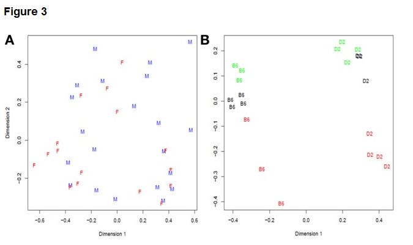

Experimental Design¶
Global Overview¶
There are two kinds of sequencing experiments - those where the sequence itself is the objective (e.g. for genome or transcriptome assembly), and those where the sequence reads are merely a way of counting some other kind of phenomenon. Examples of the latter type of experiment include differential gene expression analysis (counting frequencies of transcripts), chromatin immunoprecipitation (counting frequencies of protein-DNA interactions), or chromatin accessibility (identifying differences in chromatin structure in intact nuclei). The design of a sequencing experiment should be based on the experimental objectives and analytical procedures, and consider all the potential sources of variation (technical, biological, and experimental) that may contribute to the variation in the final dataset. Data processing should evaluate the quality of the sequence reads in the context of the experimental design, and remove data that falls below an objective threshold of satisfactory quality. That threshold will be different for different experimental designs, so quality control measures must be based on the experimental design and experimental objectives.
Objective¶
Discuss sources of technical and biological variation in high-throughput DNA sequencing experiments, along with strategies for experimental designs that maximize the value of the resulting data for addressing the experimental question of interest. The issues in experimental design for sequencing experiments are not fundamentally different than those involved in experimental design in other contexts, such as agricultural field tests, and they are important for the same reasons. Poorly-designed sequencing experiments may yield data poorly suited for testing the intended hypothesis, reducing the overall value of the outcome.
Description¶
A central concern in many statistical analyses is evaluating the amount of variation within a group or category relative to the variation among groups or categories. The ability to identify sources of variation, and classify each source of variation either as within-group or among-group, is therefore important in the process of data analysis. Good experimental design is critical to maximize this ability to identify sources of variation. Each method for highly-parallel DNA sequencing has its own characteristics in terms of the type and frequency of sequencing errors observed. A good experimental design is based on the recognition that both biological and technical sources contribute to the variation observed in experimental results, and includes appropriate randomization and replication strategies to maximize the power of the experiment to detect differences in the variables of experimental interest. An example analysis of experimental sources of variation is shown below: Fig 3 from Reeb and Steibel (2013), which shows a multi-dimensional scaling analysis of two RNA-seq experiments with contrasting levels of biological and technical variation.
Plot (A) on the left shows combined technical and biological variation among unreplicated RNA-seq data of cell cultures from different male and female donors. Biological and technical variation are confounded, because only a single dataset was collected per cell culture. The plot on the right shows biological replicates of two inbred mouse strains called B6 and D2. The major clusters separated along Dimension 1 (the x-axis) are the two strains, while variation in Dimension 2 is technical variation among individual samples, RNA extractions, library preparations, and flowcell differences. The colors of the letters show which samples were run on the same flowcells. It is clear from this panel that differences among flowcells account for some but not all the differences observed among biological replicates of the same mouse strain. The libraries were not individually-indexed and pooled, so variation among individuals, RNA preps, and libraries is confounded with variation among lanes within flowcell and variation among different flowcells.
Key Facts¶
Indexing or barcoding strategies allow sequencing experiments to be carried out on a mixture of libraries from different experimental treatments. This allows use of orthogonal experimental designs that avoid confounding technical sources of variation with experimental sources of variation (Auer and Doerge, 2010). The experimental treatments or factors controlled by the experimenter can be randomly allocated to different sequencing runs, including different sequencing platforms if desired, if the experiment is large enough to require collection of data from more than a single experimental unit. Technical sources of variation need not be orthogonal to each other in the experimental design, if variation from technical sources is simply a nuisance factor in the analysis. If it is important to know the exact source of technical variation, such as whether poor data are due to a failure of library construction or to a failure of the sequencing service center, then keeping those factors from being confounded is valuable.
Preliminary trials using simulated data sets, or “plasmode” datasets derived from from real data but with specific effects added, can be a powerful tool to guide experimental design (Reeb and Steibel, 2013). The ideal situation is to find an existing dataset in a public database that is derived from an experimental system similar to the intended experiment, so that the correlation structure and sources of technical and biological variation are likely to be similar to those encountered in the data to be collected. This is not always feasible, particularly for researchers working on experimental questions that have not yet been widely explored using highly-parallel sequencing as an experimental method.
An experimental design for any highly-parallel sequencing experiment needs to take into consideration the experimental objectives, the availability of biological material, and potential technical and biological sources of variation. The question of whether individual samples should be analyzed multiple times (technical replicates), or if the same amount of sequencing is better allocated to increasing the number of independent biological samples analyzed (biological replicates), depends in part on the experimental objectives and in part on the relative amount of variation expected to come from the different sources of variation. For example, experienced technical staff can typically produce very consistent libraries given adequate amounts of high-quality RNA, so in general there is little benefit to having multiple libraries made from a single RNA sample, because library preparation is not a major source of variation.As a general guide, it is usually more informative to have more biological replicates than to acquire the same amount of sequence data from more technical replicates, but this can vary depending on experimental priorities (Robles et al, 2012). Yang et al (2014) also report that more biological replicates is better - two is the minimum number, but two replicates do not provide all the benefit that can be obtained from three or four replicates.
Exercise¶
- Develop an experimental design for an RNA-seq experiment that involves comparison of samples treated in two different ways. Suppose that the treatment is time-consuming enough that only two experimental units can be processed per day, and that technical variation in the treatment from one day to the next is unavoidable. What experimental design would avoid confounding this technical variation with the biological variation that is the topic of interest in the experiment?
- If the experimental design were to be extended so that biological responses to the two treatments are to be compared across multiple genetic backgrounds, what would the best approach be to incorporate two different genetic entries into the experiment?
Additional Resources¶
- Auer PL, Doerge RW (2010) Statistical design and analysis of RNA sequencing data. Genetics 185(2):405-416 PubMed Central
- Robles JA, Qureshi SE, Stephen SJ, Wilson SR, Burden CJ, Taylor JM. (2012) Efficient experimental design and analysis strategies for the detection of differential expression using RNA-sequencing. BMC Genomics 13:484. PubMed Central
- Reeb PD, Steibel JP (2013) Evaluating statistical analysis models for RNA sequencing experiments. Front Genet. 4: 178. PubMed Central
- Ching T, Huang S, Garmire LX (2014) Power analysis and sample size estimation for RNA-Seq differential expression. RNA 20: 1684-1696 Publisher website
- Yang Y, Fear J, Hu J, Haecker I, Zhou L, Renne R, Bloom D, McIntyre LM. (2014) Leveraging biological replicates to improve analysis in ChIP-seq experiments. Comp Struct Biotechnol J 9(13):e201401002
Last modified 18 December 2018. Edits by Ross Whetten, Will Kohlway, & Maria Adonay.